wahr ist, werden die Musterdaten der k-Level normal und unabhängig verteilt, wobei der Mittelwert 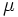 und die Varianz 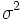 ist. Daher folgt die Statistik
wahr ist, werden die Musterdaten der k-Level normal und unabhängig verteilt, wobei der Mittelwert 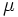 und die Varianz 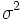 ist. Daher folgt die Statistik
Contents |
Angenommen wir haben in k Faktorstufen Antwortdaten gemessen, wobei 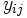 den Wert der i-ten Beobachtung (i = 1, 2, ...nj) der j-ten Faktorstufe (j = 1, 2, ..., k) repräsentiert. Wir könnten das Modell der einfachen ANOVA wie folgt schreiben:
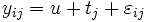,j = 1, 2, ..., k; i = 1, 2, ...nj
Da die ANOVA testet, ob der Mittelwert von zwei oder mehreren Grundgesamtheiten (Stufen) gleich ist. Daher ist die Nullhypothese, dass die Mittelwerte der verschiedenen Grundgesamtheiten gleich sind, und die Alternativhypothese lautet, dass mindestens ein Mittelwert der Grundgesamtheiten anders als die anderen Mittelwerte ist. Mathematisch wird dies wie folgt ausgedrückt:
H0: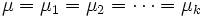
H1: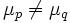 for some p and q, 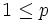, 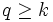.
wobei 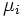 der j-te Stichprobenmittelwert ist. Um die Hypothese zu testen, muss die gesamte Stichprobenvariation in die Variation zwischen Gruppen und die Variation innerhalb der Gruppen geteilt werden. Anschließend wird der F-Test verwendet, um zu testen, ob diese beiden Variationen unterschiedlich sind.
Algebraisch können wir das entsprechende Mittel der Quadrate jeden Abschnitts verwenden, um die Streuung zu schätzen:
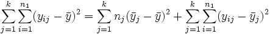
wobei der linke Term die "Totale Summe der Quadrate" und der zweite Term die "Summe der Quadrate der Behandlungen" ist, welche die Streuung zwischen Gruppen repräsentiert. Der dritte Term ist die "Summe der Quadrate der Fehler", welche die Streuung innerhalb von Gruppen repräsentiert. Die Gleichung wird gewöhnlich wie folgt gekürzt:
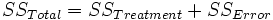
Wenn wahr ist, werden die Musterdaten der k-Level normal und unabhängig verteilt, wobei der Mittelwert 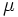 und die Varianz 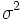 ist. Daher folgt die Statistik
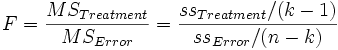
einer F -Verteilung 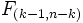 , wobei MSTreatment das Mittel der Quadrate für Treatments und MSError das Mittel der Quadrate für Fehler ist. Beide werden durch das Teilen der Summe der Quadrate durch die entsprechenden Freiheitsgrade gebildet. Bei einem gegebenen bestimmten Signifikanzniveau 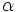 sollte die Nullhypothese zurückgewiesen werden, wenn die F-Statistik den kritischen Wert 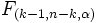, d.h. den Tabellenwert der F-Verteilung mit k-1 und n-k Freiheitsgraden bei Niveau , überschreitet oder der gefolgte P-Wert ist geringer als das Signifikanzniveau.
Im Allgemeinen werden die Ergebnisse einer Varianzanalyse in einer ANOVA-Tabelle präsentiert:
| Quelle der Variation | Freiheitsgrade (DF) | Summe der Quadrate (SS) | Mittel der Quadrate (MS) | F -Wert | Wahrsch. > F |
|---|---|---|---|---|---|
| Modell (Faktor) | k-1 | SSTreatme | MSTreatment | MSTreatment / MSError | 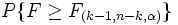 |
| Fehler | n-k | SSFehler | MSError | ||
| Gesamtsumme | n-1 |
In der Varianzanalyse wird angenommen, dass verschiedene Stichproben gleiche Varianzen haben. Dies wird gewöhnlich Homogenität der Varianzen genannt. Der Levene-Test und der Brown-Forsythe-Test können zum Bestätigen der Annahme verwendet werden. Angenommen wir haben k Stichproben von Antwortdaten, wobei den Wert der i-ten Beobachtung (i = 1, 2, ...nj) der j-ten Faktorstufe (j = 1, 2, ..., k) repräsentiert. Die Hypothesen der beiden Tests (Levene und Brown-Forsythe) können wie folgt ausgedrückt werden:
H0: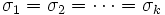
H1: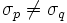 , für mindestens ein Paar (p, q), 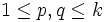
Definiert 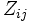 als die folgenden drei Definitionen bezüglich verschiedener Tests,
Wenn H0 gilt, folgt die Teststatistik
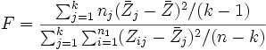
(nahezu) einer F-Verteilung , wobei 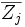 und 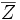 der Gruppenmittelwert bzw. der Gesamtmittelwert des ist.
Nimmt man an, dass durch eine ANOVA festgestellt wurde, dass mindestens einer der Mittelwerte der Grundgesamtheiten statistisch unterschiedlich ist, so vergleicht ein Mittelwertvergleich alle möglichen Paare von Faktorstufenmittelwerten, um herausfinden, welcher Mittelwert (oder welche Mittelwerte) signifikant verschieden ist (sind). Es gibt verschiedene Methoden des Mittelwertvergleichs in Origin. Wir verwenden die NAG-Funktion nag_anova_confid_interval (g04dbc), um Mittelwertvergleiche durchzuführen.
In Origin sind zwei Typen des mehrfachen Mittelwertvergleichs enthalten:
Weitere Informationen finden Sie in der NAG-Hilfe.
Die Analyse der Trennschärfe berechnet die Ist-Trennschärfe für die Stichprobendaten als auch die hypothetische Trennschärfe, falls zusätzliche Stichprobenumfänge angegeben sind.
Die Trennschärfe einer einfachen Varianzanalyse ist ein Maß für ihre Sensibilität. Die Trennschärfe ist die Wahrscheinlichkeit, dass die einfache ANOVA Unterschiede in den Stichprobenmittelwerten aufdeckt, wenn tatsächlich Unterschiede existieren. Drückt man dies mit den Begriffen der Null- und Alternativhypothese aus, so ist die Trennschärfe die Wahrscheinlichkeit dafür, dass die Teststatistik F stark genug ist, um die Nullhypothese zu verwerfen, wenn sie tatsächlich verworfen werden sollte (d.h. die Nullhypothese ist nicht wahr).
Die Trennschärfe wird durch folgende Gleichung definiert:
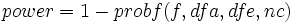
wobei f die Abweichung der nichtzentralen F-Verteilung ist mit dfa und dfe als Modell- bzw. Fehler-Freiheitsgrade. Und nc = SST/MSE, wobei SST die Summe der Quadrate des Modells und MSE der quadratische Mittelwert der Fehler ist. Der Wert von probf() wird durch die NAG-Funktion nag_prob_non_central_f_dist (g01gdc) ermittelt. Beachten Sie bitte die NAG-Dokumentation für weitere Hintergrundinformationen.
Die obige Beschreibung ist eine kurze Übersicht über den Algorithmus der einfachen ANOVA. Weitere Informationen über die Einzelheiten der mathematischen Deduktion finden Sie im entsprechenden Teil des Anwenderhandbuchs und der NAG-Dokumentation.